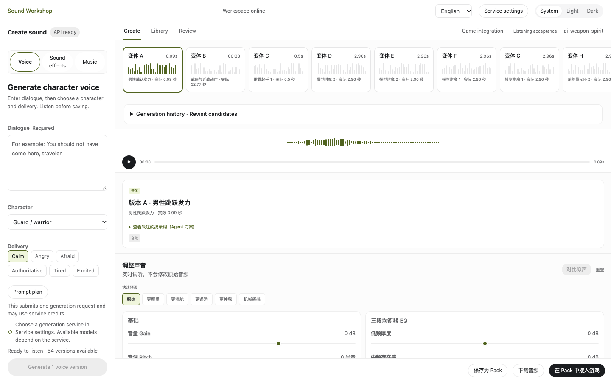

Sound Workshop
Audio plugin
A Tiangong Engine plugin for making music, sound effects and voice, auditioning revisions and connecting a chosen version to a game event.
天工引擎 · 声音工坊
- My role
- Project owner · Audio workflow design
- Format
- Tiangong Engine extension · Team project
- Tools
- Tiangong Engine · Game audio production

Project & role
Overview
Sound Workshop accepts a scene brief, produces audio candidates and keeps their source material, adjustment settings and revision history together. A creator can listen, change a take and choose a version before game integration.
My contribution
I led the audio workflow design and worked with developer collaborators and AI-assisted coding on implementation. My focus was the sequence from a sound brief to auditioning, revision and event-based playback.
Design process
Brief → candidate → revision → game event
Make and compare candidates
Music, effects and voice share a review step. The original take and its settings remain available when an adjusted version is created.
Bind a selected version to an event
The agent reads the game code to identify the playback trigger, then connects the chosen audio version. A 16-second generated music cue was used to check export, import, looping and stopping in a game template.
Credits
Team project. Audio workflow and product direction: Hu JinLin; implementation with developer collaborators and AI-assisted coding. Generated audio is identified as such. Product description and icon: the official ForgeaX catalogue.